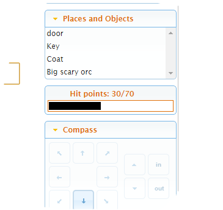

Custom Command and Status Panes
As of Quest 5.7 you can add new panes to your game.
Custom Command Pane
On the Interface panel of the game object, make sure “Show Panes” is ticked, then tick “Show a custom command pane”. If you start your game, you should see the new pane, but it just says “Commands” and does not do anything.
We need to set some commands. Go to the Features tab of the game object, and tick “Advanced scripts”, then go to the Advanced scripts tab of the game object, at the top is the user interface initialisation script. This is the place to add the script command that will set up the panel.
We need to use the JS.setCommands function, which can take two parameters. The first is a string of commands to display, separated by semi-colons. The second is the colour to display it in, and is optional. Here is an example:
JS.setCommands ("Look;Wait")
In this example, the colour is set too. Note that you can use any web colour or hex triples.
JS.setCommands ("Look;Wait;Sit", "blue")
Go in game, and test it works!
You can change the commands at any time in your game, just be using the JS.setCommands function again. If the player does sit, you might want to have a line in the SIT command like this, so now there will be a “Stand” commmand, and not “Sit”:
JS.setCommands ("Look;Wait;Stand", "blue")
You might want to set the commands when the player enters and leaves a specific room, if there are commands specific to that room. This works best for simple, one-word commands, however you can use any command Quest can understand, including commands you have added yourself.
Custom Status Pane
This requires a bit more effort on your part, and knowledge of HTML and CSS will be useful.
On the Interface panel of the game object, make sure “Show Panes” is ticked, then tick “Show a custom status pane”. If you start your game, you should see the new pane, but it just says “Status” and does not do anything.
We need to use the JS.setCustomStatus function, which can take one parameter, a string to display. Here is an example:
JS.setCustomStatus ("You are fine!")
At this point, you may wonder why bother? The power of the custom status pane comes from using it with HTML. This allows you to format the string to show the information nicely. Here is an example that displays the player’s status in a neat table.
html = "<table><tr><td width=\"50%\">Condition:</td><td>Poisoned</td></tr><tr><td></td><td>Woozy</td></tr></table>"
JS.setCustomStatus (html)
In your game, you would want to re-build the string whenever a attribute changes. Here is some example code that will take a string list of conditions, called “list”, and display it in a table as in the previous example:
html = "<table><tr><td width=\"50%\">Condition:</td><td>"
html = html + Join(list, "</td></tr><tr><td></td><td>")
html = html + "</td></tr></table>"
JS.setCustomStatus (html)
Indicator bar
So how about a graphical representation of the player’s hits, a horizontal bar that shows the proportion of her hits she has remaining… We can do that!

We are going to have two attributes here, the player’s “hitpoints” and their maximum, “maxhitpoints”. We will set up an HTML table again, but the second row will be the indicator; a span element with a padding-right attribute that will be adjusted as hits change.
We need this to happen when the game starts and when reloaded, so this needs to go in the “inituserinterface” script. However, we only want to set the hitpoints once, so that needs to go into the “start” script.
Here is the code for the “inituserinterface” script:
s = "<table width=\"100%\"><tr>"
s = s + " <td style=\"text-align:right;\" width=\"50%\">Hit points:</td>"
s = s + " <td style=\"text-align:left;\" width=\"50%\"><span id=\"hits-span\">---</span></td>"
s = s + " </tr>"
s = s + " <tr>"
s = s + " <td colspan=\"2\" style=\"border: thin solid;background:white;text-align:left;\">"
s = s + " <span id=\"hits-indicator\" style=\"background-color:black;padding-right:200px;\"></span>"
s = s + " </td>"
s = s + " </tr>"
s = s + "</table>"
JS.setCustomStatus (s)
if (HasScript(player, "changedhitpoints")) {
do (player, "changedhitpoints")
}
The first ten lines set up the HTML (each line is adding a bit more to the string, s). There are two span elements, called “hits-span” and “hits-indicator”, and these are what will get updated.
The next line dumps the HTML in the custom status pane.
The last three rooms update the values - but only if player.changedhitpoints has been set, i.e., when reloading.
And then in the “start script”:
player.changedhitpoints => {
JS.eval ("$('#hits-span').html('" + game.pov.hitpoints + "/" + game.pov.maxhitpoints + "');")
JS.eval ("$('#hits-indicator').css('padding-right', '" + (200 * game.pov.hitpoints / game.pov.maxhitpoints) + "px');")
}
player.maxhitpoints = 70
player.hitpoints = 70
The first four lines here add a change script to the “hitpoints” attribute of the player. This will fire whenever the hits change (you might want to add a bit that makes the player die if they dip below zero). The “hits-span” part just changes the text, but the “hits-indicator” sets a new value for the right padding of the span, making it wider or narrower as required.
The last two lines set the hit points and the maximum. Note that the hit points must be set last so that when they change, the custom status pane will be updated correctly.